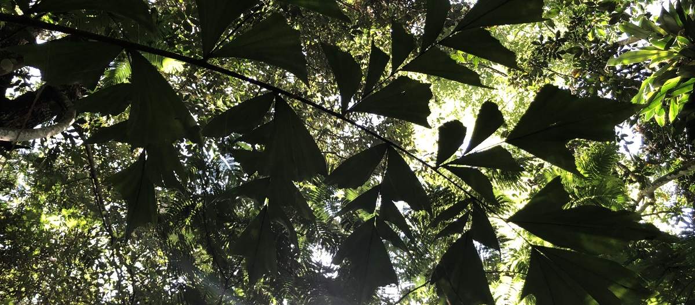
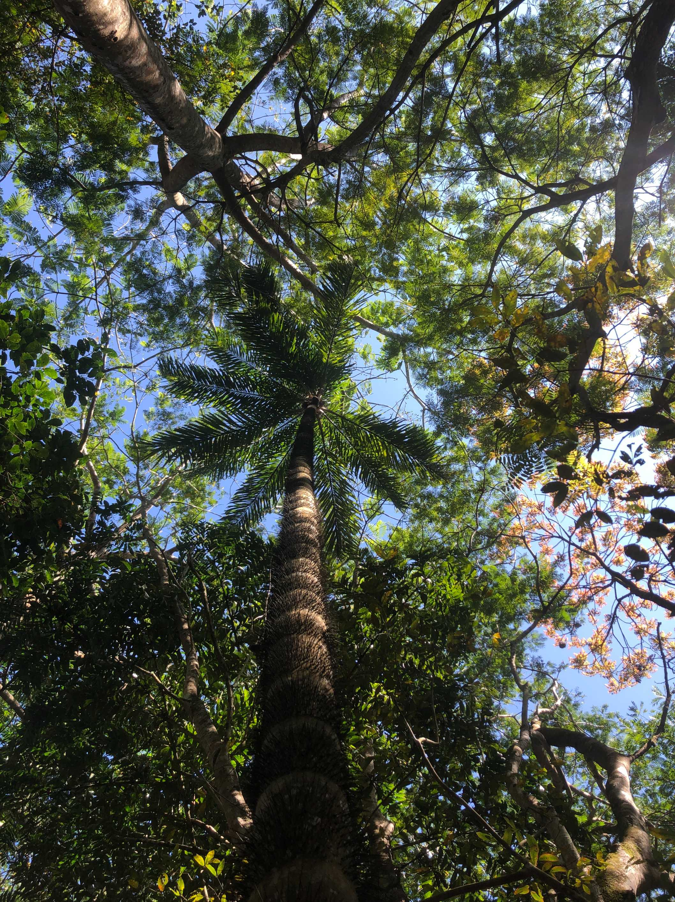
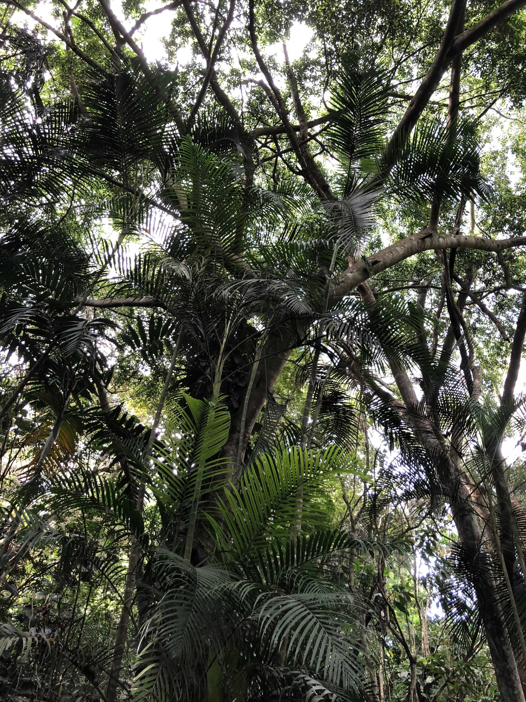
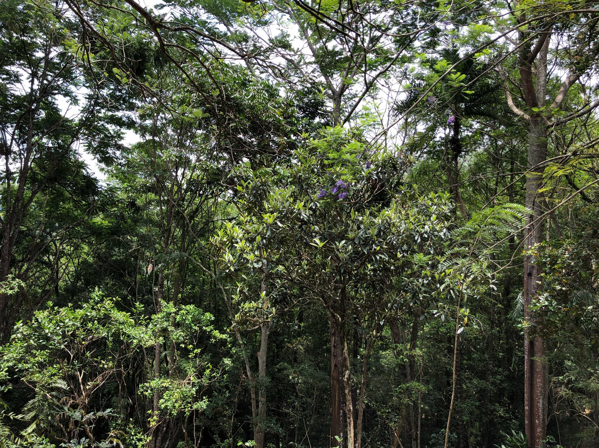

The Satanic Formula
All of a sudden both the individual and society become disinterested observers. A lot of information is generated on how to perceive and understand the problem.
Read More

F rom the Archean, 3.5 billion years ago, until the present there is a consistent pattern in all of evolutionary history, increases in biomass and biodiversity the operations of which, create ecosystems services. Although, biomass was impacted five times in the history of life, such that a large percentage of the existing biomass was fossilised, the imperative at each response was the growth of biomass. The time that biomass could remain resident in any area for periods of time produced biodiversity, in other words, biodiversity are the patterns wrought in biomass over time and space. Because we are all a part of it, we see ourselves when we see the spirit of life. We are children of light. Light from the sun, streaming out into the universe, is slowed down briefly, to power the manifestation of life on this planet, before it is released to continue its journey outwards. This act is created by photosynthetic biomass (PB), the green matter of all plants, where the molecule chlorophyll performs the act of primary production, the initial step in the manifestation of life. This is the process of carbon dioxide and water being fused together to hold the energy of sunlight while releasing oxygen. The ability to increase living biomass through the absorption of solar radiation while releasing oxygen and water vapour into the atmosphere, is the first act of building life and is represented by the chemical formula:
a6CO₂ + a6H₂O + e → bC₆H₁₂O₆ + b6O₂
It states that six molecules of carbon dioxide and six molecules of water from the atmospheric cycle are joined by using the energy of sunlight to yield a biologically based sugar and six molecules of biologically produced oxygen. Chemically stated, this ‘Creation Formula’ represents the first act of life, the consequence of this act is an environment rich in breathable oxygen and drinkable water to sustain its manifestations. The actions or services created by invoking the formula, are termed ‘Primary Ecosystem Services’; sugar production, oxygen generation and water transformation, i.e., all actions essential for the sustainability of the life support system of the planet. These ‘Primary Ecosystem Services’ are created by the action of photosynthesis which helped create the oxygen rich atmosphere that we enjoy today. By the operation of the Creation Formula, the annual output of carbon dioxide from volcanic activity was deposited as fixed carbon locked for millions of years in the lithosphere as fossils. The oxygen generated by the activity was retained in the atmosphere. The fossilised material was transformed into hydrocarbons within the rock. Hydrocarbons, made from the fossilisation of organic compounds of once living forms. It is the burning of these fossil components using biologically generated oxygen that is currently driving climate change and pushing the threat to life ever closer. The reason why becomes clear when the generalised formula for hydrocarbon combustion is looked at, in terms of its combustion products, which is responsible for climate change. Because of the effect it has on life It has been chemically stated as the ‘Satanic Formula’
fCH₄ + bO₂ → nCO₂ + nH₂O + e

Which sates that, burning fossil Hydrogen and fossil Carbon (Oil, Gas, Coal) using biologically created Oxygen, creates ‘new’ Carbon Dioxide and ‘new’ water vapour that never existed in the atmosphere before. These ‘new’ gaseous inputs into the atmosphere accelerate the current trends of rampant global warming and climate change. But there is another feature about this formula that really makes it sinister and that is the fact the global Oxygen concentration is falling , the natural world is unable to cope with the extraction. For instance, the total worldwide oil consumption was about 93 million barrels per day (bbl./day), to yield energy, the Oxygen out put of approximately 221,965,166 trees working for one year will be required and still, no replacement mechanism is being considered. The need to address the problem becomes more urgent when the massive burning of Oxygen by the defence industry and the aerospace industry is considered. None of these industries acknowledge any responsibility for burning up the global stocks, in fact developers like Elon Musk has openly stated that his operations are profitable because ‘Oxygen is free’. It is this ‘free rider’ that allows the externalising of costs involved in the use of the Global Commons. A ‘free rider’ that has led to an acceleration of the destruction of the stock of Oxygen in the Global Commons. Paying for its replacement is logical, practical and responsible The consequence of invoking ‘the Satanic Formula’ is clear, in our wholehearted acceptance in invoking the Satanic Formula as the basis of human development, we ignore the fact that by driving a motor car or taking an airplane or doing the myriad of things that shape our life’s activity, we invoke it constantly and contribute to the stifling of life!
Can we change the current suicidal direction of human growth in terms of the economically defined negative or positive externalities, the cost of negative externalities of all industrial processes needs to be paid by the public, is there processes that provides positive externalities that provide benefit and well-being to the public for no cost? The basic problem is the ease with which operators can externalise their impact into the Global Commons and not be held responsible for such action. In fact, much of the current value realised by the existing economic system, is achieved by externalising (i.e., not paying for) the negative impact on the Global Commons or the public. The impact of such negative externalities allowed under the current economy is that ‘the degradation of the Global Commons’ and consequently to the degradation of human well-being as seen by the crises brought about by climate change and the exponential increase of non-communicable diseases (NCDs) Invoking the ‘Satanic Formula’ has brought us nothing but destruction and suffering, perhaps it is time to reject the economy of death and look to building a new economy by invoking the ‘Creation Formula’ and creating an economy of life. TAn economic system, which values productivity without reliance on fossil energy and renewable energy with decentralised production becomes a development goal. A system where the value of Ecosystem Services can be realised.

We require systems change Locally and Globally
An environmental system, where the life support system is not compromised. Where Biodiversity is recognised as valid indicator of ecosystem change and stability. A Public Health system, where the national goal is a decrease in the rate of non-communicable diseases (NCD’s), through the control of dietary and environmental toxins, in addition to upgrading reactive care response. There are two avenues for creating wealth and progress in this world one is by invoking the ‘Satanic Formula’ that leads to death and destruction, the other is by invoking the ‘Creation Formula’ that leads to life and sustenance. We have experienced the first avenue and indeed it leads to a bleak future, is it not time to stop beating ourselves with a hammer on the head to cure our headache and look for a jar of healing salve instead?

All of a sudden both the individual and society become disinterested observers. A lot of information is generated on how to perceive and understand the problem.
Read More
We know that the mean temperature will rise, but the speed of that increase may be much more than the Intergovernmental Panel on Climate Change (IPCC) has computed.
Read More
Where Carbon Dioxide combine with water and powered by sunlight produces the solid organic matter (Carbohydrate) and the free molecular Oxygen.
Read More
Threat is being constantly amplified by the actions of the man. The actions of modern technological man have helped bring this threat very close to becoming real for us on this planet of Earth.
Read MoreEarth Restoration is dedicated to regenerating ecosystems, restoring biodiversity, and empowering communities to create a sustainable and thriving planet for future generations.
EarthRestoration, All rights reserved.
Designed By Digital Technology Partner Elzian Agro